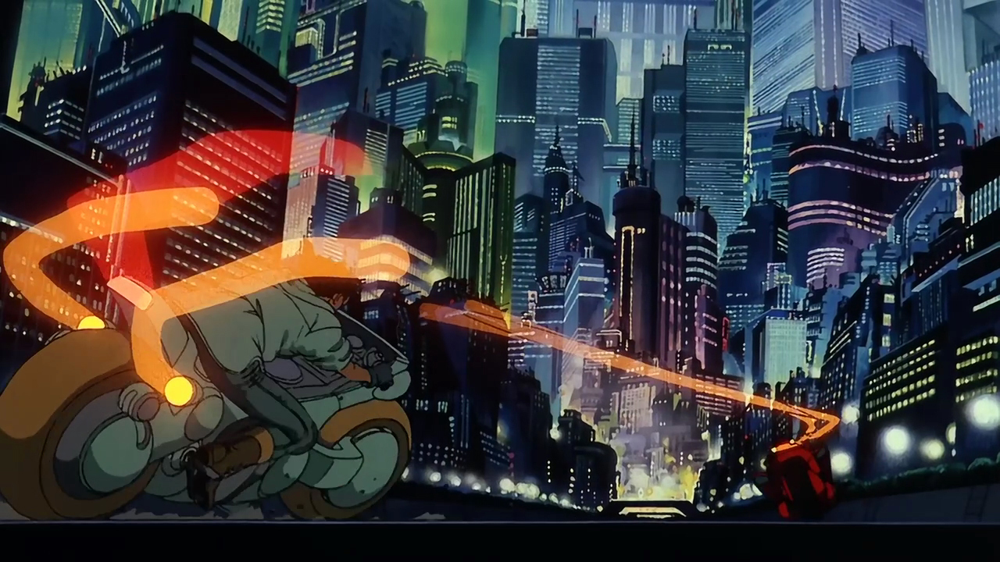
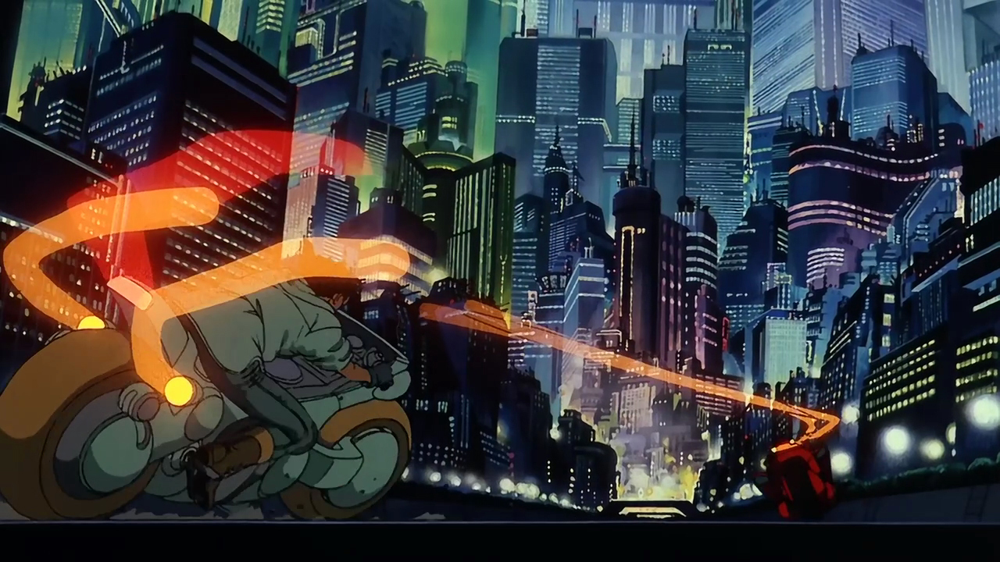

What Is Akira?
Akira (アキラ) originally started life as a monthly Manga comic strip in Japan's Young Magazine on Dec 6th 1982. It was one of the first aimed at the teen market in Japan. Written and illustrated single handedly by Katsuhiro Otomo (大友克洋) over the course of many years, the Manga is a remarkable achievement.
Rising popularity saw the western translation released by Epic Comics in 38 squarebound issues. These books were coloured via a digital process that was devised for this release, this was one of the first comics to be coloured digitally, which today is common practice.
Akira was turned into an animated film in 1987 and for many, was the first taste of this phenomenon known as Anime from Japan.
Myself, like so many others, were drawn to it because it looked like nothing we had seen before. Even today it has a style very different from most Japanese animation, which tends to be over cutesy. Otomo's style has a life like quality not that common in Japanese animation. Otomo also has a great eye for mechanical design and detail, apparent in both the Manga and Anime of Akira. The most popular and obvious reference point for his ability at design comes in the form of Kaneda's bike. This alone has hooked many people onto Akira. The famous Akira bike has since gone onto iconic status and secured a massive cult following around the globe, and spawned many projects to realise a life sized working replica.
To this day Akira remains one of the most popular works in Anime and was almost single handedly responsible for the early 90's Anime boom in the west. Akira stands as one of the greatest achievements in animation.
Tetsuo in the nursary from the anime Akira by Katsuhiro Otomo. What makes Akira so compelling is it's complex plot intertwining politics, secret government projects, armed forces, scientists, religious fanatics, government resistance, teen biker gangs, psychics and childhood friends; Kaneda and Tetsuo who find them selves at war.
The story focuses on man's struggle for power and it's feeble attempts at trying to understand and harness that which is potentially inside us all.
It delves into mysticism, conspiracy theories and man's fear of the escalating technological advancement we are becoming so dependant on. The story contains social commentary on man's stupidity in the pursuit of power from the only culture to have a nuclear weapon used on it.
All set against the backdrop of Neo-Tokyo AD 2019, a sprawling neon metropolis, not too dissimilar from today, built upon the ashes of a Tokyo long since destroyed by an unknown force. The streets are alive with unrest as rival gangs wage war on each other and terrorists fight a government very much in the hands of corruption and turmoil.
The story is a boiling pot of 21st century fears that can only be cleansed by one boy, a boy who has the power of the universe at his disposal, a boy named Akira.
Akira is a true cyberpunk masterpiece of science-fiction story telling.